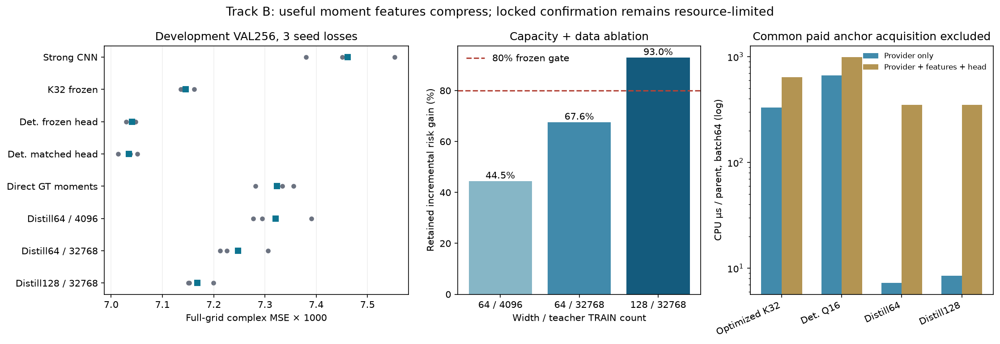
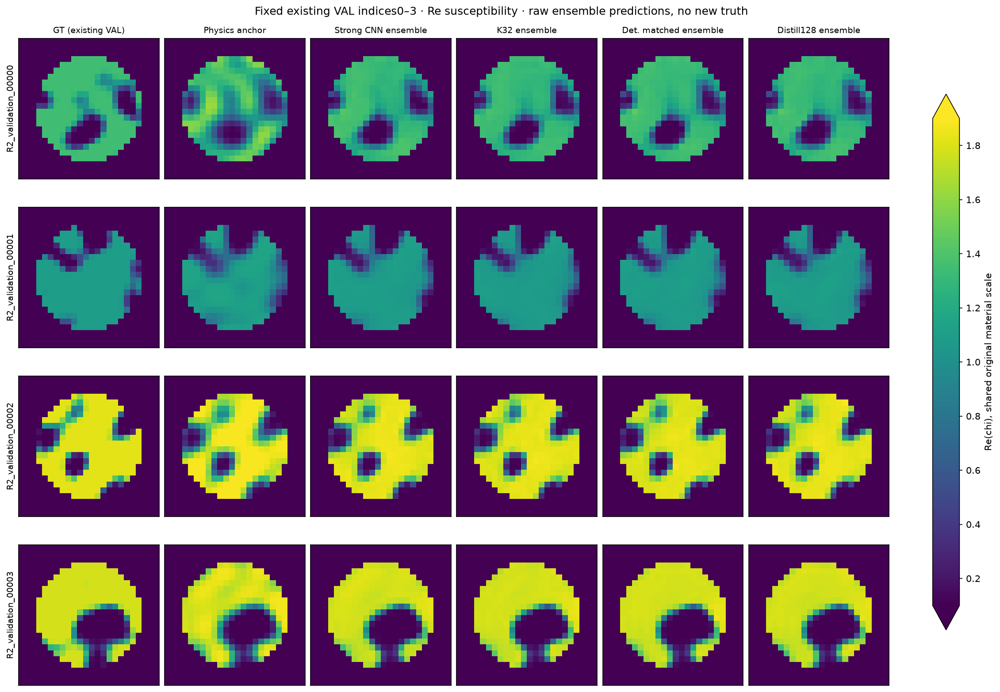
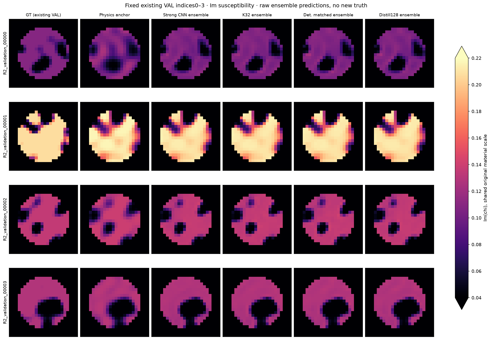
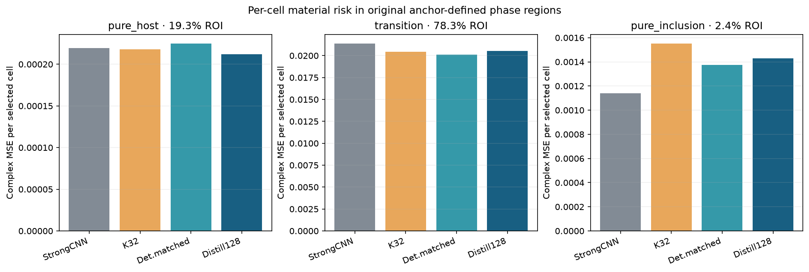
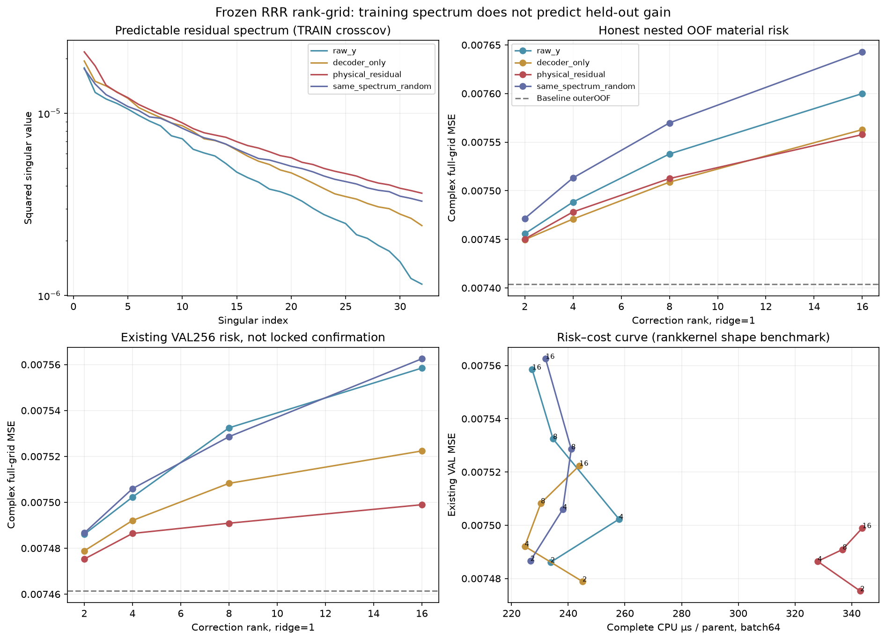

Track B：材料矩表示的压缩与边界
Development completed · Fresh confirmation RESOURCE_LIMITED
214272参数raw-y蒸馏表示保留Gaussian fusion新增风险收益92.96%；额外provider费用约2–3%。完整provider+特征+head费用约55%，共同付费物理anchor仍存在。独立256+256确认没有执行。

完整中文报告 · 交接摘要 · 指标CSV · 结果与相区 · 完整成本与失败 · 冻结manifest · 推断入口
全部统计为现有VAL选择数据的探索性结果，不是posterior合格、独立TEST或最终科学接受结论。R4已暴露TEST未用于本轮选择。一个初始5.77GB内存失败已保留，修正后所有主训练观察峰值低于3GiB。
固定现有VAL0–3，不按loss挑图


相区每单元风险

风险奇异谱、rank与成本

风险来自真实保存的rank拟合；成本使用shape-equivalent rank kernel的实际完整CPU计时。CPU/MPS原3e-6复现门FAIL保留；独立CPU精确重复PASS。详见报告和原始JSON。